Čtvrtek 12. 8.
Slavnostní zahájení s filmem Tichý horizont, půlnoční klasika a první noc pod Perseidami.
2. ročník · –
Pole pod kopulí, Ondřejov (okres Praha-východ)
Filmy o vesmíru a budoucnosti, debaty režisérů s vědci a každou noc pozorování meteorického roje Perseidy pod tmavou oblohou. Program pro noční publikum i pro rodiny s dětmi.

Slavnostní zahájení s filmem Tichý horizont, půlnoční klasika a první noc pod Perseidami.
Soutěžní blok A, debata Ženy za kamerou žánru a kosmická opera Dlouhý drift na velkém plátně.
Vodní rakety na Raketové louce, restaurovaná klasika Cesta k Proximě a debata o mimozemském životě.
Robotí závody, vyhlášení cen soutěže krátkých filmů a závěrečný film Ledová orbita.
Na Orbitě po projekci filmu o cestě ke hvězdám následuje debata, kde vedle režisérky sedí astrofyzička, a pak se jde k dalekohledům. Festival se koná v době maxima meteorického roje Perseidy, takže každý večer končí pozorováním.
Režisérka komorních hard sci-fi příběhů, absolventka filmové režie. Její film Tichý horizont zahajuje druhý ročník Orbity.
Astronom, který pozoruje Perseidy přes třicet let. Průvodce nočním pozorováním na Orbitě.
Britská režisérka velkých vesmírných příběhů o rodinách na palubách generačních lodí.
Klasik české sci-fi narozený roku 1941. Orbita uvádí jeho dva filmy v digitálně restaurovaných verzích.